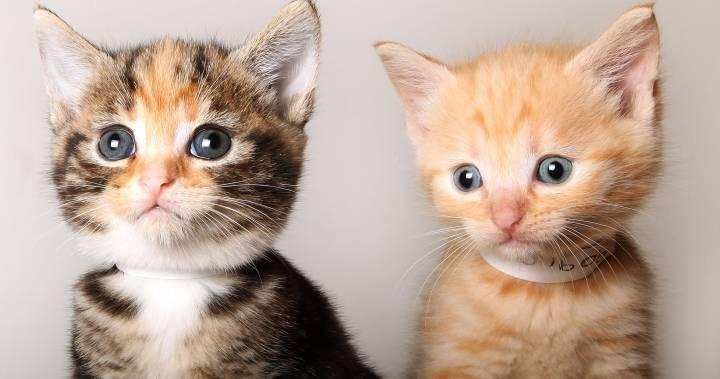
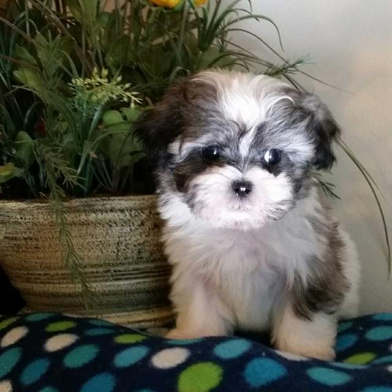
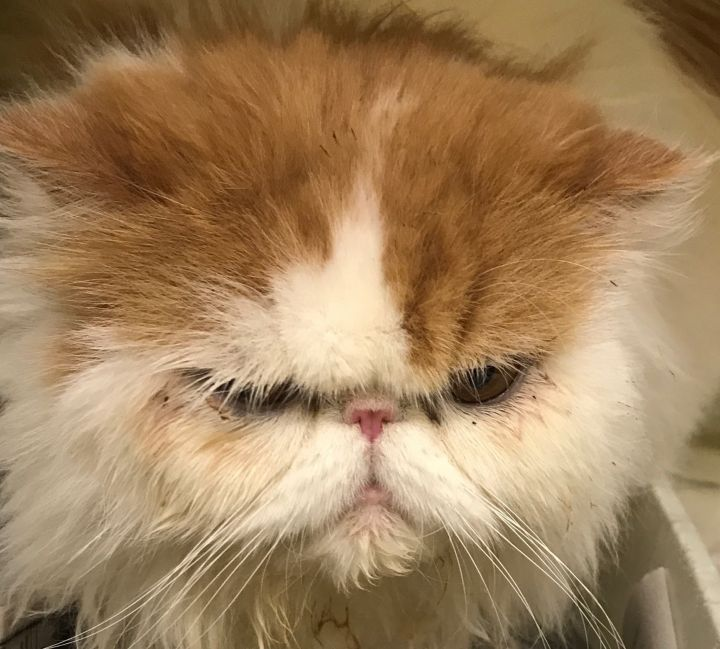

Bernard:
Bernard is a 7-year-old chihuahua mix. His former owner brought him to the shelter 6 months ago because he could no longer take care of him. He is a sweet but very lazy boy. If he could lounge around in the sun all day without using his legs at all, he would! You might have heard that some chihuahuas can be mean, but that's not the case with Bernard. He is a total love bug.

Milo and Otis:
Milo and Otis are a brother-sister kitten pair that were brought to us in May 2019 when they were just 4 weeks old.

Jasper:
Jasper arrived at our shelter a few months ago and has been waiting for his 'forever home' very patiently. He is a very playful boy and loves to go for long walks. He gets along great with other animals. We're not exactly sure how old he is, but we suspect him to be around 8 months.

Sassy
Sassy is a strong independent lady cat. She's quite the fearless fluffball, and isn't afraid to tell you what she wants with a loud 'mew.' She is currently three years old, having celebrated her third birthday in April 2019. She is a bit skiddish, so she might not be suitable for families with small children or other animals.
